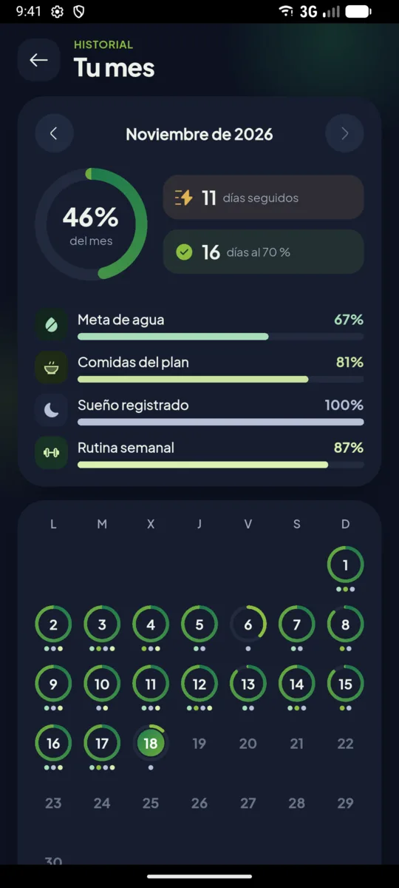
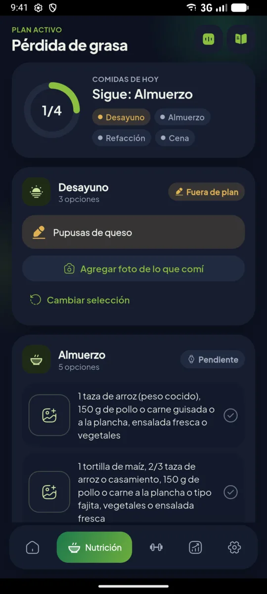
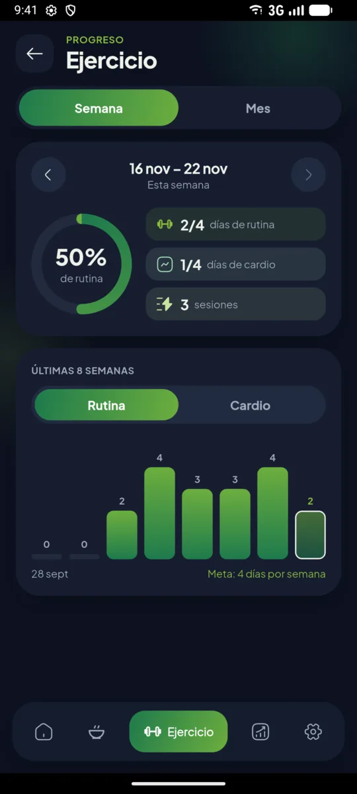

Tu salud, un día a la vez.
Kiolog lleva el registro de tu plan alimenticio, tu rutina, el agua, el sueño y tus medidas. Cuando llega la consulta, el reporte para tu nutricionista ya está listo.


Todo lo que te pide tu nutricionista, en un solo lugar.
Cada módulo se puede encender o apagar. Usa solo lo que necesitas.
Plan alimenticio
Desayuno, almuerzo, refacción y cena con las opciones de tu plan. Marca lo que comiste, lo que comiste fuera del plan y agrega una foto.
Rutina de ejercicio
Tu plan por días, con series, repeticiones, pirámides, drop sets, notas del entrenador y un video de referencia por ejercicio. También cardio.
Agua
Registra en mililitros o litros y mira cuánto te falta para la meta del día.
Sueño
Anota a qué hora te dormiste y despertaste, incluidas las siestas.
Progreso y medidas
Peso, cintura, cadera y las demás medidas de cada consulta, con gráficas y álbumes de fotos de tu avance y tus platos.
Reporte para la consulta
Un PDF con tu cumplimiento, gráficas diarias, tabla semanal y el calendario de ejercicio, listo para compartir.

Sigue tu plan sin pensar en qué toca.
Kiolog te dice cuál es la siguiente comida y te muestra las opciones que te dio tu nutricionista.
- Las opciones de cada tiempo de comida, tal como vienen en tu plan
- Registro honesto: también lo que comiste fuera del plan
- Foto de referencia por platillo y foto de lo que comiste


La rutina del día, lista para empezar.
Elige el día, inicia la sesión y registra el peso y las repeticiones de cada serie.
- Semana a la vista con tus días de rutina y de cardio
- Peso en kilos o libras
- Cumplimiento de las últimas 8 semanas contra tu meta

Mira cuánto has avanzado.
Tu peso en el tiempo, las medidas de cada consulta y dos álbumes: uno con tu foto del día y otro con tus platos.
- Gráfica de peso con el cambio desde el inicio
- Medidas de cada consulta, una al lado de la otra
- Recordatorio de tu próxima cita

Enciende solo lo que usas.
Nutrición, hidratación y ejercicio son módulos independientes. Elige también el tema: noche, claro o salvia.
Tus datos se quedan en tu teléfono.
Kiolog no tiene cuentas ni servidores. Todo se guarda en una base de datos local, y tú decides con quién compartir el reporte.
Hecha con Flutter.
El código es abierto en GitHub. Arquitectura BLoC por módulos y una base SQLite tipada con Drift.